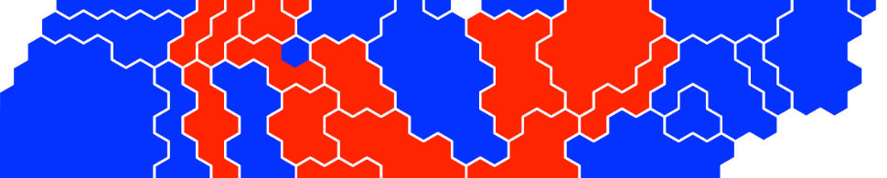
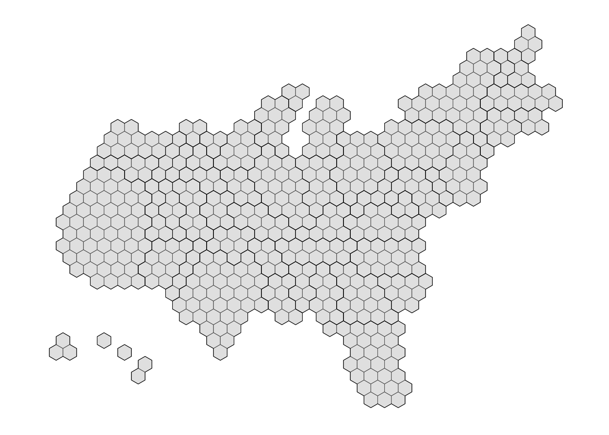
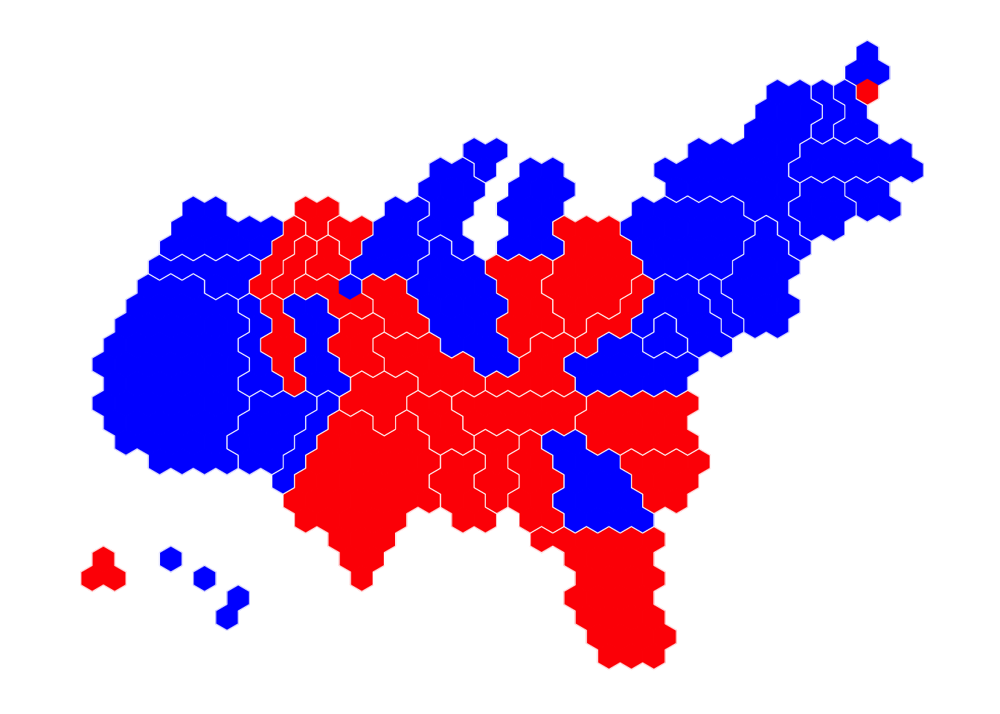
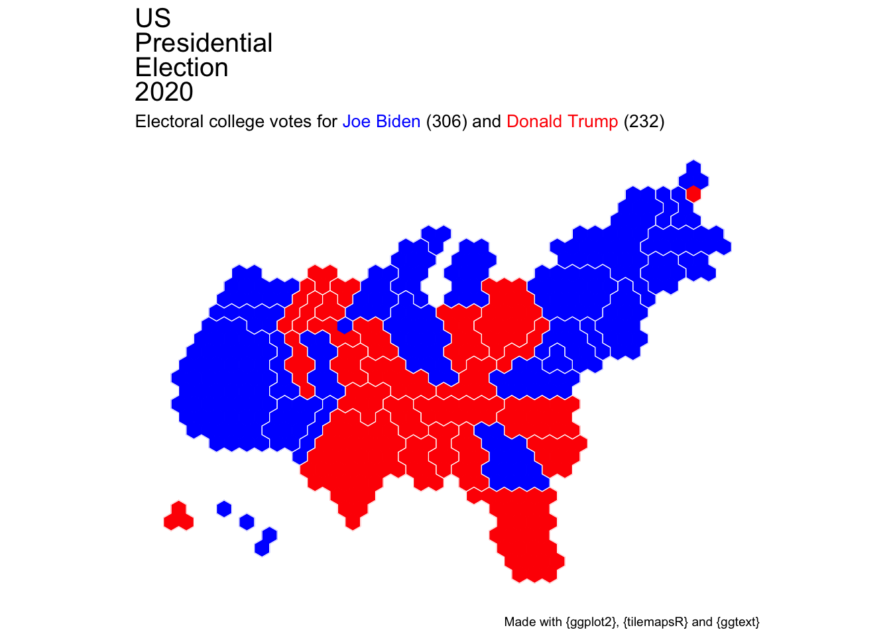
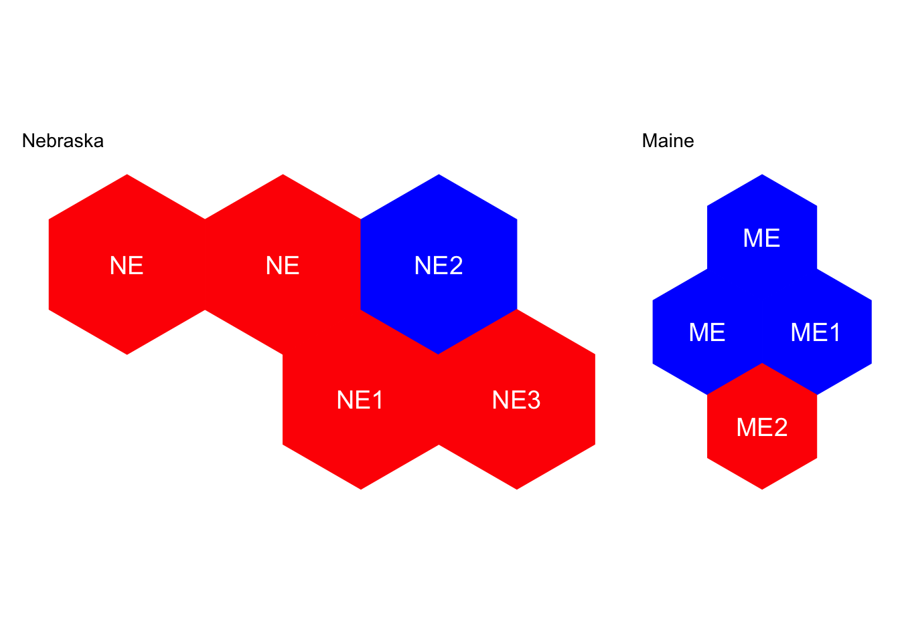

suppressPackageStartupMessages({
# Data wrangling
library(dplyr) # data manipulation
library(stringr) # string manipulation
# Mapping
library(tilegramsR) # tilegram objects
library(ggplot2) # plotting
library(ggtext) # text rendering in plots
library(ggthemes) # has a map theme
library(patchwork) # organise plots
})
tl;dr
The {tilegramsR} package for R contains a geospatial object for mapping the US electoral college. I amended it for states that use the congressional district method and generated a minimalist map of the results for the 2020 US presidential election.1
Send a cartogram
It’s usually best to scale subnational divisions by voter count when visualising election results. This is because election outcomes are decided by people, not land area. Cartograms are a good choice for this: they’re maps where geographic units are resized according to something other than area.
One format of the cartogram is the tilegram. Tilegrams disregard the shape of the geographic units entirely and represent them with uniformly-shaped ‘tiles’ instead. Squares are often used, but hexagons give you a bit more freedom to pack the units and approximate geographic location. Hexagons are the bestagons, after all.
A tilegram may end up looking strange if you’re used to looking at Mercator-projected maps, but it’s a better reflection of relative voter contribution.
Back to college
So we could make a tilegram of the recent US presidential election with a separate shape for each state. Right? Well, yeah, but there’s a better way.
The US presidential election is special because the total vote count doesn’t directly elect the leader. Instead there’s an ‘electoral college’ system. Put extremely simply, each state has a number of representatives (‘electors’) that are sent to vote for the candidate that got the majority vote share in their state. The winning national candidate has the majority of state electors declaring for them (270 of 538).
So it’s electors, not states, that should be represented by each unit in a tilegram of US presidential election results.
Tile style
Fortunately for us, the {tilegramsR} package by Bhaskar V. Karambelkar has an sf_FiveThirtyEightElectoralCollege2 object that contains tilegram data for the US where each elector is represented by one hexagon.
It’s an sf-class object, which means it contains tidy geospatial information: each row is an elector, with a column for the state abbreviation and a column for the hexagon geometries.
Before we take a look, let’s load the packages used in this post.
The default print method for sf-class objects shows us a few things. We can see there are 538 two-dimensional shapes: one for each elector. Note that this map is built in arbitrary space: the bounding box doesn’t reflect actual geography and there’s no coordinate reference system (CRS). The preview of the features shows us each row of the dataset with each state labelled with its abbreviation (CA is California, for example).
sf_FiveThirtyEightElectoralCollegeSimple feature collection with 538 features and 3 fields
Geometry type: POLYGON
Dimension: XY
Bounding box: xmin: 293.6239 ymin: 16.95238 xmax: 2495.803 ymax: 1661.333
CRS: NA
First 10 features:
FID state tilegramVa geometry
1 02 AK 3 POLYGON ((293.6239 237.3333...
2 06 CA 55 POLYGON ((352.3486 847.619,...
3 06 CA 55 POLYGON ((322.9862 796.7619...
4 06 CA 55 POLYGON ((352.3486 745.9048...
5 06 CA 55 POLYGON ((322.9862 695.0476...
6 06 CA 55 POLYGON ((352.3486 644.1905...
7 02 AK 3 POLYGON ((322.9862 288.1905...
8 02 AK 3 POLYGON ((352.3486 237.3333...
9 06 CA 55 POLYGON ((411.0734 949.3333...
10 06 CA 55 POLYGON ((381.711 898.4762,...Similarly, there’s an object called sf_FiveThirtyEightElectoralCollege.states that contains geometry to delineate state boundaries in the sf_FiveThirtyEightElectoralCollege object. We can combine these and look at a quick tilegram of the US electoral college using {ggplot2} and the special geom_sf() geom for visualising geospatial data stored in sf format.
ggplot() +
geom_sf(data = sf_FiveThirtyEightElectoralCollege) +
geom_sf(
data = sf_FiveThirtyEightElectoralCollege.states,
color = "black", alpha = 0, size = 1
) +
theme_map()
You can see that each elector is represented by a single hexagon and groups of hexagons are combined into states (thick outlines). Hexagons are placed roughly in the familiar shape of the US despite the change to the apparent area of each one. The non-contiguous regions in the lower left are Alaska (three electors) and Hawaii (four).
District-structure strictures
In general, the winner of the popular vote within a state gains all the electors for that state. There are two exceptions: Nebraska (NE) and Maine (ME). These states use the ‘congressional district method’.
The popular-vote winner gets two electors by default and the remaining electors are won by the winner of the popular vote in each district (three in Nebraska and two in Maine). In other words, the electors from these states could be from more than one party.
This is sometimes represented in electoral college maps by colouring Nebraska and Maine with stripes of with each party’s colour. We can avoid that suboptimal representation with a tilegram because we can individually colour our tiles.
Unfortunately, the sf_FiveThirtyEightElectoralCollege doesn’t account for the congressional district method, so we’ll have to build this in ourselves. We can isolate rows for Nebraska and Maine and then generate a new column to create distinct names for the districts, which we’ll number sequentially.
# Isolate/update states with the congressional district method
cdm_sf <- sf_FiveThirtyEightElectoralCollege %>%
filter(state %in% c("NE", "ME")) %>%
mutate(
state_cdm = c(
"NE", "NE", "NE1", "NE2", "NE3",
"ME", "ME", "ME1", "ME2"
)
) %>%
select(state, state_cdm, everything())
# Preview
cdm_sfSimple feature collection with 9 features and 4 fields
Geometry type: POLYGON
Dimension: XY
Bounding box: xmin: 851.5092 ymin: 932.381 xmax: 2407.716 ymax: 1661.333
CRS: NA
state state_cdm FID tilegramVa geometry
1 NE NE 31 5 POLYGON ((851.5092 1000.19,...
2 NE NE 31 5 POLYGON ((910.2339 1000.19,...
3 NE NE1 31 5 POLYGON ((939.5963 949.3333...
4 NE NE2 31 5 POLYGON ((968.9587 1000.19,...
5 NE NE3 31 5 POLYGON ((998.3211 949.3333...
6 ME ME 23 4 POLYGON ((2290.266 1559.619...
7 ME ME 23 4 POLYGON ((2319.628 1610.476...
8 ME ME1 23 4 POLYGON ((2348.991 1559.619...
9 ME ME2 23 4 POLYGON ((2319.628 1508.762...You can see that we’ve retained the original state column and now also have a state_cdm column that contains tiles named by district.
Now we can replace the data for these states in our original sf-class object.
# Update the original object with the new information
f38_cdm_sf <- sf_FiveThirtyEightElectoralCollege %>%
mutate(state_cdm = state) %>% # generate column
filter(!state %in% c("ME", "NE")) %>% # remove old NE and ME
bind_rows(cdm_sf) %>% # bind updated NE and ME
select(state, state_cdm, everything()) # relocate colsParty time
We have our geospatial information sorted; now to create vectors of the states won by each candidate as declared by the Associated Press (AP) at time of writing.
# Vector of states/districts won by Democrat candidate
d_states <- c(
"AZ", "CA", "CO", "CT", "DC", "DE", "GA", "HI",
"IL", "MA", "MD", "ME", "ME1", "MI", "MN", "NE2",
"NH", "NJ", "NM", "NV", "NY", "OR", "PA", "RI",
"VA", "VT", "WA", "WI"
)
# Vector of states/districts won by Republican candidate
r_states <- c(
"AK", "AL", "AR", "FL", "IA", "ID", "IN", "KS",
"KY", "LA", "ME2", "MO", "MS", "MT", "NC", "ND",
"NE", "NE1", "NE3", "OH", "OK", "SC", "SD", "TN",
"TX", "UT", "WV", "WY"
)With this information we can add a couple of columns to our geospatial object: result to indicate a Democrat or Republican winner, and the symbolic colour of the party (blue for Democrat and red for Republican). We’ll refer to this colour column in the plot so we can colour the tiles correctly.
# Mark districts with winning party and provide colour
results_sf <- f38_cdm_sf %>%
mutate(
result = case_when(
state_cdm %in% d_states ~ "D", # Democrat
state_cdm %in% r_states ~ "R" # Republican
),
colour = case_when(
result == "D" ~ "#0000FF", # blue
result == "R" ~ "#FF0000" # red
)
) %>%
select(state, state_cdm, result, colour, everything())
# Preview
results_sfSimple feature collection with 538 features and 6 fields
Geometry type: POLYGON
Dimension: XY
Bounding box: xmin: 293.6239 ymin: 16.95238 xmax: 2495.803 ymax: 1661.333
CRS: NA
First 10 features:
state state_cdm result colour FID tilegramVa geometry
1 AK AK R #FF0000 02 3 POLYGON ((293.6239 237.3333...
2 CA CA D #0000FF 06 55 POLYGON ((352.3486 847.619,...
3 CA CA D #0000FF 06 55 POLYGON ((322.9862 796.7619...
4 CA CA D #0000FF 06 55 POLYGON ((352.3486 745.9048...
5 CA CA D #0000FF 06 55 POLYGON ((322.9862 695.0476...
6 CA CA D #0000FF 06 55 POLYGON ((352.3486 644.1905...
7 AK AK R #FF0000 02 3 POLYGON ((322.9862 288.1905...
8 AK AK R #FF0000 02 3 POLYGON ((352.3486 237.3333...
9 CA CA D #0000FF 06 55 POLYGON ((411.0734 949.3333...
10 CA CA D #0000FF 06 55 POLYGON ((381.711 898.4762,...Gram them tiles
The plot will be built from our sf-class object that has been edited for the congressional district method and contains the results; the state boundaries from sf_FiveThirtyEightElectoralCollege.states; and the title with coloured as a key matching the candidate’s party.
Note that Nebraska (centre-left) and Maine (upper-right) are indeed coloured to represent more than one party, given the share of votes in their congressional district systems.
# Build plot object
p <- ggplot() +
geom_sf( # layer containing district hexagons
data = results_sf,
fill = results_sf$colour, # hex interiors
color = results_sf$colour # hex outlines
) +
geom_sf( # layer containing state hexagons
data = sf_FiveThirtyEightElectoralCollege.states,
color = "white", # state boundaries
alpha = 0, # transparent
size = 1 # thickness
) +
theme_map() # remove non-data plot elements
p
I think that’s quite pleasing.
We can add some more contextual information with titles. In particular, we can use the text rendering of {ggtext} to create a subtitle with the candidates’ names coloured as a key to the map.
p + # the original plot object
labs( # {ggtext} to colour names by party
title = "<span style='font-size:15pt'>
US Presidential Election 2020",
subtitle = "<span style='font-size:10pt'>Electoral college votes for
<span style='color:#0000FF;'>Joe Biden</span> (306) and
<span style='color:#FF0000;'>Donald Trump</span> (232)
</span>",
caption = "Made with {ggplot2}, {tilemapsR} and {ggtext}"
) +
theme(
plot.title = element_markdown(lineheight = 1.1),
plot.subtitle = element_markdown(lineheight = 1.1)
)
Zoom! Enhance!
In case you didn’t spot Nebraska and Maine, we can plot these two alone and label them by state_cdm to expose the district names.
# Quick and dirty function to plot each state
plot_state <- function(state_abbrev) {
# Isolate state data
state_sf <- results_sf %>%
filter(str_detect(state, paste0("^", state_abbrev)))
# Build plot
p <- ggplot() +
geom_sf(
data = state_sf,
fill = state_sf$colour, color = state_sf$colour
) +
geom_sf_text( # overlay state abbrev
data = state_sf, aes(label = state_cdm),
size = 5, color = "white"
) +
theme_map()
# Provide a
if (state_abbrev == "NE") {
p <- p + labs(title = "Nebraska")
} else if (state_abbrev == "ME"){
p <- p + labs(title = "Maine")
}
return(p)
}
# Arrange plots side-by-side with {patchwork}
plot_state("NE") + plot_state("ME")
Note that the districts aren’t necessarily placed in geographically-accurate locations within each state, relatively speaking. But that’s okay, because the tilegram is not an accurate representation of geography anyway.
Development
I’ve chosen to keep these maps very simple, partly for the aesthetics, but also because the purpose is to communicate the share of electoral college votes with minimal distraction.
You could do a number of other things to provide further information, like label states with geom_sf_text(), colour the tiles by vote share rather than outright winner, or make it interactive with the {leaflet} package and include mouseovers to show a full breakdown of results.
Other solutions
You can find many, many examples of cartograms or other map types used to display the presidential election results. For example, check out:
- The Wall Street Journal has a square version of the hexagonal map in this post
- The Financial Times shows a regular map with each state’s electoral college contribution overlaid as squares
- The BBC and Reuters have a regular map with the option to switch to a cartogram with one square per state
Let me know if you seen any particularly good examples.
Environment
Session info
Last rendered: 2023-07-18 20:56:59 BSTR version 4.3.1 (2023-06-16)
Platform: aarch64-apple-darwin20 (64-bit)
Running under: macOS Ventura 13.2.1
Matrix products: default
BLAS: /Library/Frameworks/R.framework/Versions/4.3-arm64/Resources/lib/libRblas.0.dylib
LAPACK: /Library/Frameworks/R.framework/Versions/4.3-arm64/Resources/lib/libRlapack.dylib; LAPACK version 3.11.0
locale:
[1] en_US.UTF-8/en_US.UTF-8/en_US.UTF-8/C/en_US.UTF-8/en_US.UTF-8
time zone: Europe/London
tzcode source: internal
attached base packages:
[1] stats graphics grDevices utils datasets methods base
other attached packages:
[1] patchwork_1.1.2 ggthemes_4.2.4 ggtext_0.1.2 ggplot2_3.4.2
[5] tilegramsR_0.2.0 sf_1.0-14 stringr_1.5.0 dplyr_1.1.2
loaded via a namespace (and not attached):
[1] utf8_1.2.3 generics_0.1.3 class_7.3-22 xml2_1.3.5
[5] KernSmooth_2.23-21 stringi_1.7.12 digest_0.6.31 magrittr_2.0.3
[9] evaluate_0.21 grid_4.3.1 fastmap_1.1.1 jsonlite_1.8.7
[13] e1071_1.7-13 DBI_1.1.3 purrr_1.0.1 fansi_1.0.4
[17] scales_1.2.1 cli_3.6.1 rlang_1.1.1 units_0.8-2
[21] commonmark_1.9.0 munsell_0.5.0 withr_2.5.0 yaml_2.3.7
[25] tools_4.3.1 colorspace_2.1-0 vctrs_0.6.3 R6_2.5.1
[29] proxy_0.4-27 lifecycle_1.0.3 classInt_0.4-9 htmlwidgets_1.6.2
[33] pkgconfig_2.0.3 pillar_1.9.0 gtable_0.3.3 glue_1.6.2
[37] Rcpp_1.0.11 xfun_0.39 tibble_3.2.1 tidyselect_1.2.0
[41] rstudioapi_0.15.0 knitr_1.43.1 farver_2.1.1 htmltools_0.5.5
[45] rmarkdown_2.23 compiler_4.3.1 markdown_1.7 gridtext_0.1.5
Reuse
CC BY-NC-SA 4.0